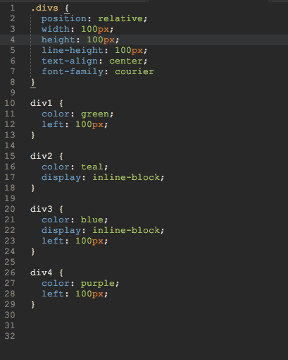

As most of us who/are were beginners with CSS will know, one of the more difficult challenges one must face as they struggle is the pain of positioning. As someone who is familiar with CSS, but still an eager learner of the CSS zen workflow, I myself continue to find myself in a near-boiling state of frustration as I shift elements around endlessly, getting seemingly nowhere, if not regressing. it works much like a window shade.
Realizing that something as unfashionable as losing my cool in front of my computer is probably best avoided, I took it upon
myself to really jump into the world of static, relative, absolute, fixed, and
inherited positioning styles, understanding that, while I may not be a design expert, I can at least be a positioning expert,
zenfully constructing my pages with cool grace.
Of all the articles I've read about, the best way to understand static elements is by using toy analogies. Namely, legos.
Static elements are like legos -- they are bound to their position in relation to other legos. They are located within a hierarchy of other lego bricks, and they do not move (unless repositioned with padding and margins!). Consider this group of divs.
Much like legos, these elements are bound to their position. They lack what we call "coordinate graphing" abilities (they cannot employ the declarations of top, left, right, or bottom). Static elements are great for those simple, lego-like pieces. When we don't need to move them outside of the hierarchy that they exist within, then we can rest easy.
Not often is this the case, however. What do we do if we need to bend the rules? Legos are fun, but they are limiting. Let's move on to relative positioning, where we leave legos behind in favor of the imagination.
When we abondon the rules that bind us, we gain much more freedom, but unless considered wisely, it can quickly lead us into ruin.
Relative elements work very much like static ones, with one key difference: we can move them. When we have a relatively positioned,
element, coordinate styling, in the flavor of top, bottom, right and left, become tools in our toolbelt. No longer
are we bound by the elements that came before us. Consider this group of relatively positioned divs. Below
exists a very anemiic version of what the css would look like for the above example:

Notice how our elements no longer adhere to the lego rules. They all now can move along their own x and y coordinates relative to their normal position. What we have is the ability to move these elements, while still understanding their relationship with their hierarchy, beyond the static rules that previously binded them. By taking advantage of display styles paired with the declarations mentioned earlier, we can shift elements from their original position to places entirely different. While we are still bound to the html hierarchy created, the way we can manipulate the elements has been expanded.
When we think of absolute positioning, we must first consider the powers we now have with relative positions. Where we were once bound to static rules, we were freed with coordinate-graphing of our elements based on where they were located originally. But those elements still exist within a heiarchy of other elements, and they are still bound in many ways to where they are located within that hierarchy.
Absolute positioning is a means of saying no thank you to any sort of positional restrictions we might have previously seen with our elements. Instead of positioning the element relative to itself, it positions the element relative to its parent, given that it's parent is relatively positioned. Otherwise, it will bypass the parent and position itself according to either the next relative container, or the body of the page. When we choose an element to be absolutely positioned within a relatively positioned container, we are giving it the power to located itself within whatever parameters have already been set by the header div. This is invaluable for creating elements that stick to certain parts of your page.
When we wanr our navigation bar to be present to the user at all times of browsing, we might solve that problem by incorperating a fixed position. A fixed position functions similarly to that of an absolute one, with one crucial difference: fixed elements will scroll as you scroll. A fixed header will stay with you as you scroll down to the bottom of the page, visible at all times, with no way of hiding it (unless javascript elements are at play). Fixed elements can be stylistically desireable -- depending on the context, they can really turn a mediocre site into a professional one.
Fixed elements rarely have a use outside of header and footer contexts, but every once in a while you might see something pop up. It's important to notes the a fixed element might run into problems with older web browsers, as it is not a style that all of them can recognize. It might be useful to employ some HTML conditionals to style the page differently in light of an incompatible browser (old IE FTW!) -- either by providing alternative styling, or adding a disclaimer letting the user know that they are viewing your ultra-modern page on a shitty and old browsing device.
Inherited positions work very much like how children inherit traits from their parents. In fact, this concept is seen in many areas of programming. It's an easy enough concept to understand with CSS -- if a style has a position that inhertits, it will adopt the value of its parent div in the HTML hierarchy. This can be useful for quickly grouping together larger groups of alike elements or if you want to single out an instance of a span element by wrapping it in a div, but it should also be used deliberatly and with caution. Based on my understanding, it seems iheritance should be used with class elements, not ID elements.
To really get a grasp of how to navigate these positional declarations, hop into devtools, either Chrome or Firefox. I'm one to prefer the Firefox development tools but Chrome has got a great set of them as well, and both are robust. Related to positioning is the display declaration, as well as the layering tools (z-index) -- both can solve problems that positions cannot fully address. Once the seamless integration of these tools is realized, full CSS positioning zen shall be acheived.
Back to Top{kind=link}
{kind=link}
{kind=link}